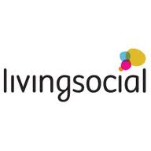
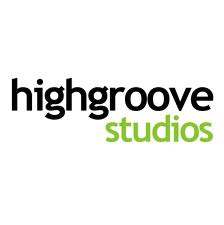

Rails Girls is coming to Washington, DC!
We're hosting a fun and free web development workshop. Come and learn about building web applications with Ruby on Rails. Here in DC, we're about more than just politics and monuments, we have a strong technology community who loves Ruby and Rails.
Apply now! Applications will be open until August 24, 2012.
Follow @RailsGirlsDC on Twitter for the latest news!
You learn designing, prototyping and coding with the help from our coaches.
You need your own laptop, curiosity and a sprinkle of imagination!
Want to help? We are looking for volunteers and Rails coaches. Email us.
| 6:00-8:00pm |
Installation PartyGet know the attendees a little bit before hand. Bring your laptop if you can, so we can install Ruby on Rails for you. |
|---|---|
| 8:30-10:00pm |
Coaches DinnerAfter the installation party, coaches will be taken to dinner. The dinner is solely for coaches and organizers. This is a small thank you to the coaches, but we'll also go through the curriculum and things good to know before the workshop. |
| 9:00-10:00am |
Registration, coffee and installationsDuring the morning we’ll install Ruby on Rails on your computer, if there has been problems before. |
|---|---|
| 10:00am-6:00pm |
WorkshopJumpstart your first web application. Along with actual coding, you'll get to hear great lightning talks, learn the language of web and meet other likeminded women.While we're setting up the program for yet another great day of learning, take a look at Berlin, Krakow & Singapore for a glimpse of what happens during the day. |
| 6:00pm-? |
After DrinksAfter the workshop, we'll gather for drinks. Venue TBD. |
Applications close: Friday, August 24
Acceptances informed: Wednesday, August 29
Location: LivingSocial, 1445 New York Avenue, Washington DC
Rails Girls DC is possible thanks to our awesome sponsors and partners:
The Hungry Academy is an intensive five-month learning program where students work with and are mentored by the industry’s best programmers while learning how to build successful products using software development tools, like Ruby on Rails. All in preparation to join LivingSocial’s elite engineering team.
 LivingSocial is the online source for discovering valuable local experiences. We inspire our members to find, share, and enjoy the best of their neighborhoods by connecting them with handpicked local businesses.
With new and diverse offerings each day, we encourage our members to discover everything from family aquarium outings to weekend excursions to exclusive gourmet dinners and more.We help great local businesses grow by introducing them to high-quality new customers, and give merchants the tools to make our members their regulars.
Based in Washington, DC, we operate in hundreds of markets across six continents.
 Highgroove Studios is a team of Ruby and Ruby on Rails experts dedicated to rapidly developing, deploying and scaling web applications for big companies and soon-to-be-big companies.
How much does the workshop cost? Nothing, it's free! You just need to be excited!
Who is this aimed for? Women of any age (over 21) with basic knowledge of working with a computer. We’ve had people of all ages taking part, most of the crowd usually is women in their twenties or thirties, but we truly welcome everyone.
Can men attend? Yes, but girls are given a priority as this is a workshop targeted for women. You're welcome to fork the project on Github and create another kind!
I know how to program - How can I help? We’re also looking for people to be coaches. We’ll walk you through the curriculum before the event. Email us